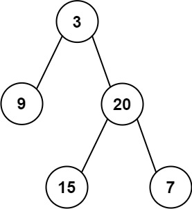

105. 从前序与中序遍历序列构造二叉树
哈希表存「中序值→下标」；前序第一个值是根，中序里定位后切出左右子树区间，递归分治建树。
思路
- 前序的下一个值
preorder[pre]就是当前子树的根，全局下标pre依次往下取。 - 哈希表
pos存「中序值 → 下标」，根一查就定位到切分点mid。 - 中序区间
[lo, hi]：[lo, mid-1]是左子树，[mid+1, hi]是右子树；lo > hi返回null。 - 先递归左、后递归右，恰好按前序顺序消费
pre；每次调用开头先复位pre和pos。
图解
最优解
1import java.util.*;2 3class Solution {4 // pos：值 -> 中序下标；pre：前序里下一个该当根的位置5 private final Map<Integer, Integer> pos = new HashMap<>();6 private int pre;7 8 public TreeNode buildTree(int[] preorder, int[] inorder) {9 // 每次调用先复位，防上一次调用的残留10 pre = 0;11 pos.clear();12 for (int i = 0; i < inorder.length; i++) pos.put(inorder[i], i);13 return build(preorder, 0, inorder.length - 1);14 }15 16 // 中序区间 [lo, hi] 建树：先取前序的值当根，再切左右17 private TreeNode build(int[] preorder, int lo, int hi) {18 if (lo > hi) return null;19 TreeNode root = new TreeNode(preorder[pre++]);20 int mid = pos.get(root.val);21 // mid 左边是左子树，右边是右子树22 root.left = build(preorder, lo, mid - 1);23 // 先左后右，pre 恰好按前序推进24 root.right = build(preorder, mid + 1, hi);25 return root;26 }27}题目
给定两个整数数组 preorder 和 inorder ，其中 preorder 是二叉树的先序遍历， inorder 是同一棵树的中序遍历，请构造二叉树并返回其根节点。
示例 1:

输入: preorder = [3,9,20,15,7], inorder = [9,3,15,20,7] 输出: [3,9,20,null,null,15,7]
示例 2:
输入: preorder = [-1], inorder = [-1] 输出: [-1]
提示:
1 <= preorder.length <= 3000inorder.length == preorder.length-3000 <= preorder[i], inorder[i] <= 3000preorder和inorder均 无重复 元素inorder均出现在preorderpreorder保证 为二叉树的前序遍历序列inorder保证 为二叉树的中序遍历序列
题面取自力扣当前版本。
数据快照 2026-11-04。题面版权归力扣所有，本站点仅供本人学习使用，请勿对外发布。